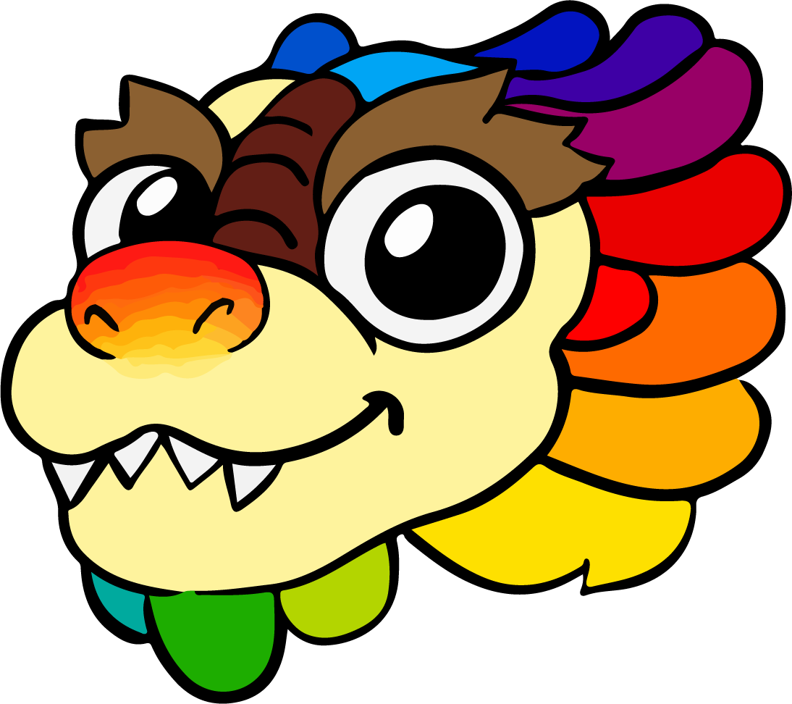

COLORIFIC
MUESTRA A
MUESTRA B
Color base:
Tipo de paleta:
Complementarios
Tríada
Análogos
Tonos Pastel
Generar Paleta
Cambiar Tema
¿Cómo usar el generador de paletas?
Seleccione un color base usando el selector de color.
Elija el tipo de paleta que desea generar.
Haga clic en "Generar Paleta" para ver los resultados.
Haga clic en un cuadro de color para copiar el valor en CMYK.